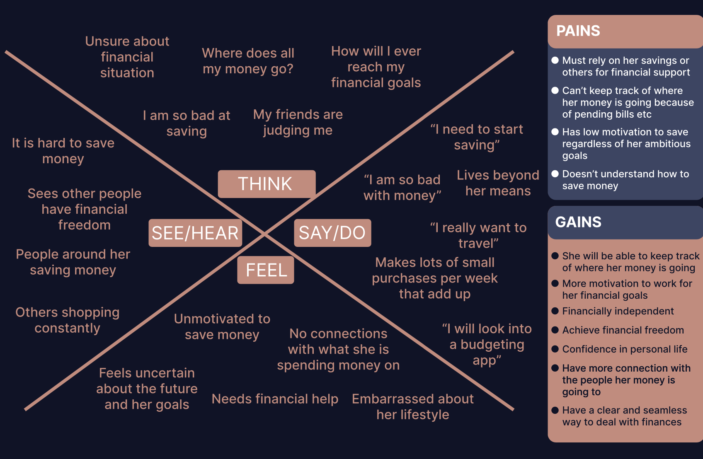
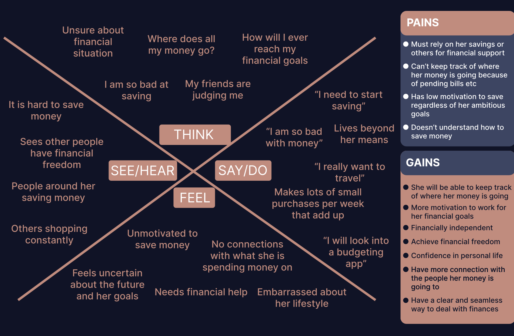

WEEK 7
COMPOSITION & ASSIGNMENT SUBMISSION
 
WEEK 7-BLOG REFLECTION
Week 7 proved to be an important point in our journey of mastering web design. This time, our focus shifted towards the importance of composition and the essential elements that shape the user experience on a website. The lecture and class delved deep into several aspects that are integral in creating visually appealing and functional web designs.
One of the core themes of the week was "composition." This encompassed various elements, each playing a crucial role in how we structure and present information on a webpage. We explored topics such as grids, visual hierarchy, colour and typography, scale, white space, and balance. These elements are like the building blocks of an effective website layout, and understanding how to use them cohesively can have a positive impact on user engagement and overall aesthetics. The week's lessons reinforced the importance of not only what we place on a page but also how we arrange it.
Moving beyond the visual aspects of composition, the class then delved into the concept of "affordances." Affordances are essentially cues or signals that tell users how to interact with various elements on a webpage. This includes buttons, links, call-to-action elements, input fields, icons, and even the language we use in UX (User Experience) copy. Understanding and utilizing affordances effectively is paramount in ensuring that users can easily navigate a website and perform the desired actions. A well-designed affordance provides users with a clear indication of what to do and how to do it.
This week's focus on composition and affordances served as a valuable reminder that web design is not just about aesthetics; it's about creating a seamless and intuitive user experience. It's about guiding users through the content, facilitating their interactions, and ultimately achieving the goals of the website, whether it's making a purchase, signing up for a newsletter, or accessing information.
As I reflect on this week's lessons, I'm increasingly aware of the multifaceted nature of web design. It's a blend of creativity, psychology, and functionality. It's about finding the right balance between visual appeal and user-centered design. I look forward to applying these newfound insights in my future web design projects, striving to create not just beautiful websites, but also websites that are a easy for users to explore and engage with. The journey continues, and with each week, I'm one step closer to becoming a more proficient and well-rounded web designer.